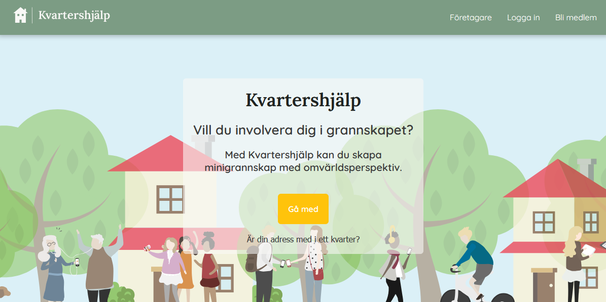
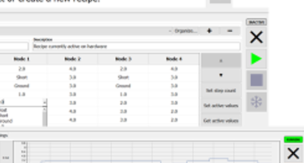
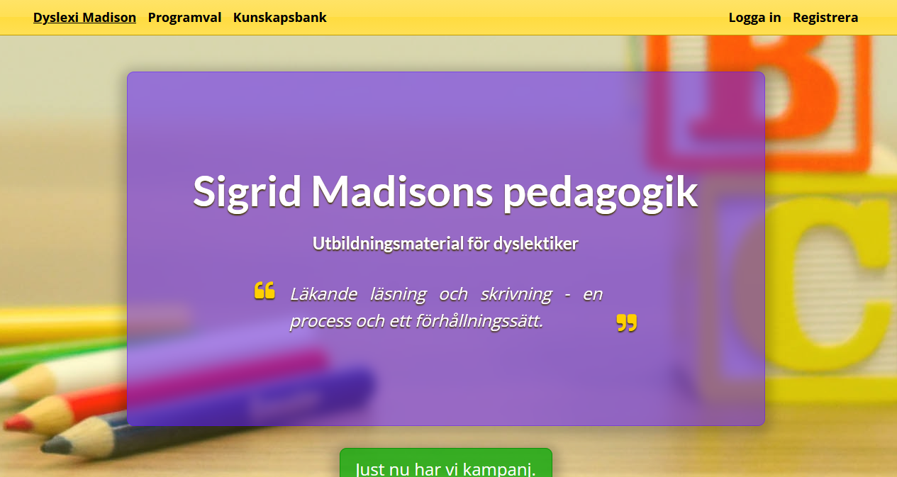
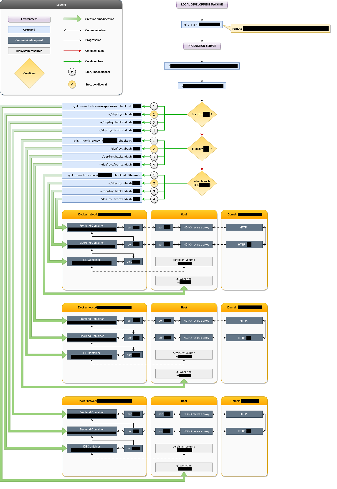
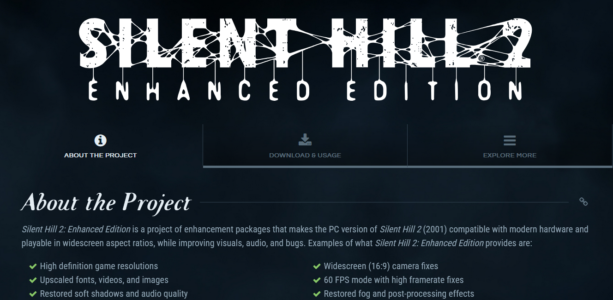

Systems Developer · Web Developer · Reverse Engineer
View résuméI build applications, systems and tools with a focus on simplicity, reliability, and real-world value.
At heart, I’m a problem-solver. Whether debugging complex low-level issues or mentoring peers, I enjoy untangling challenges and sharing knowledge.
My focus areas primarily include:
I have worked with multiple architectures including x86, MIPS, and PowerPC.


Desktop application

Among some of my historical system implementations is a deployment system that automates application updates across environments.
The system utilizes Git hooks, automated shell scripts, and containerized services to ensure consistent application delivery.
It supports branch-based deployment logic and uses reverse proxy routing to distribute traffic between frontend, backend, and database services.
It also supports persistence of databases in Docker containers through the use of persistent volumes.


C · C# · Python · JavaScript · PHP · Delphi · Assembler (x86, MIPS, PowerPC) · Arduino
HTML · CSS · Bootstrap
Win32 API · .NET · Node.js · React · Next.js · Express · AJAX · Axios
MySQL · MariaDB · PostgreSQL · SQLite · MSSQL · MongoDB
Docker · VirtualBox · VMware · QEMU · Proxmox
Git · GitLab CI/CD · GitHub
Visual C · MinGW/GCC · Pelles C · Zig · IDA · Ghidra · Visual Studio · VSCode · Postman · FFmpeg · Photoshop · GIMP
Windows · Linux · OpenBSD
SSH · NGINX · Apache